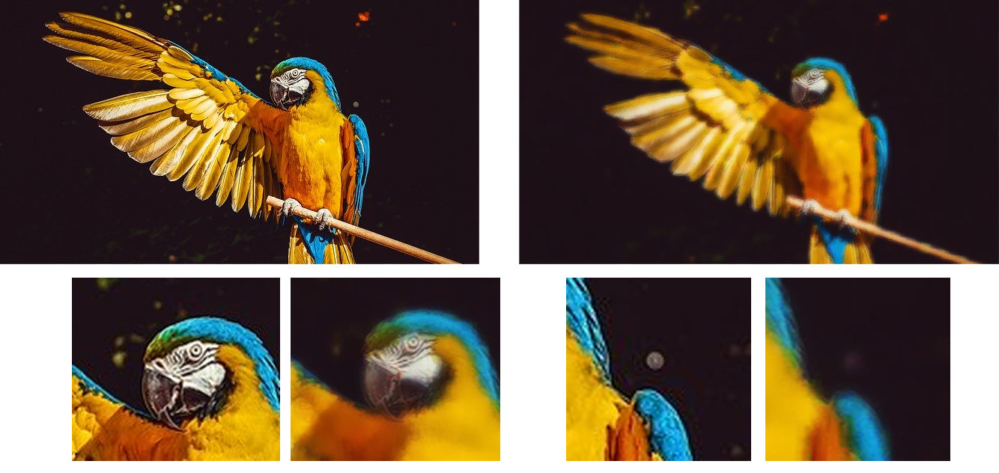
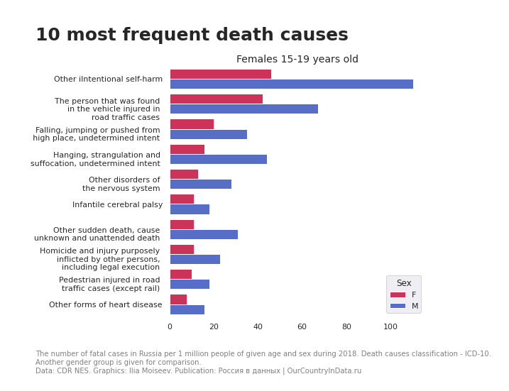
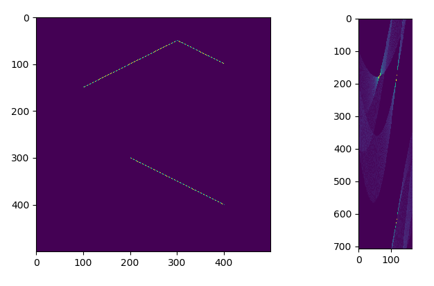

and this is my personal website! I'm studying a master's degree in Big Data and Machine Learning at ITMO University. Here you can find detailed information about me, see the description of my projects and find out how to contact me or see my other profiles.
Master's degree in the field of Big Data and ML at the
ITMO University (2021-2023)
Bachelor degree in the field of computer engineering in the
Department of Electronic Computing Machines
of South Ural State University (2017-2021)
Computer vision school of 3DiVi Inc (2020) | Certificate
Mathematical logic course from The National Open University "INTUIT" (2019) | Certificate
Python programming course from stepik.org (2018) | Certificate
Russian is my native language. I speak English quite good, can understand everything spoken or written in English. I've got FCE certificate with score 177 in December 2019, which means that I have level B2 (It is nearly C1, which is 180).
My interests include computer vision, data science and other related topics like
applied mathematics and statistics. The most of my
projects and publications are in these fields. I'm also interested in art, history and politics.
And how we can address social, political and business problems using data.
If we talk about programming languages, I know C++ quite well.
I also know
C# and Python.
I've written a lot of Python code recently for computer vision tasks.
I have experience in using numpy, OpenCV, Keras, pandas and other popular frameworks.
I can also write SQL queries on basic level.
Can't say that it's essential list of the languages that I've used in my practice,
but these are the ones I'm most confident about.
The paper which I've wrote with Vladimir Gudkov about new image smoothing algorithm.
It was published in IEEE Xplore library in June 2020.
Image smoothing aims to get rid off small insignificant details on the image and
to save object boundaries at the same time. It is fundamental task in image processing
and can be useful in many fields of computer vision.
Here is the example of the algorithm results, original and smoothed image:

What causes death of different age groups? To find it out I've done visualization
of death rates using open dataset from OurCountryInData repository. You can view all
plots on their site and the description of all the steps that I've got through with
code in Jupyter notebook in my GitHub page.

In my practice I had to write some image processing algorithms from scratch. Some using Python
some using C++. So I decided to post the code to my GitHub page. Repository contains several
algorithms such as Hough transform
and different variations of image filtering. It also has
.bmp files handler written on C++ for image files reading.
The result of applying Hough transform to the image with three straight lines is on the picture.

This is hitherto my first and biggest C++ project. I was doing it initially as my course project in university, but then it continued to grow and became as it is now. Repository contains source code for creating and using multilayer neural networks. I also started to develop evolutional algorithm that would help finding best network architecture. It is still under developement. I've tested networks that you could make with my code on classical "XOR" problem and they successfully converge on it as they should.
{kind=link}